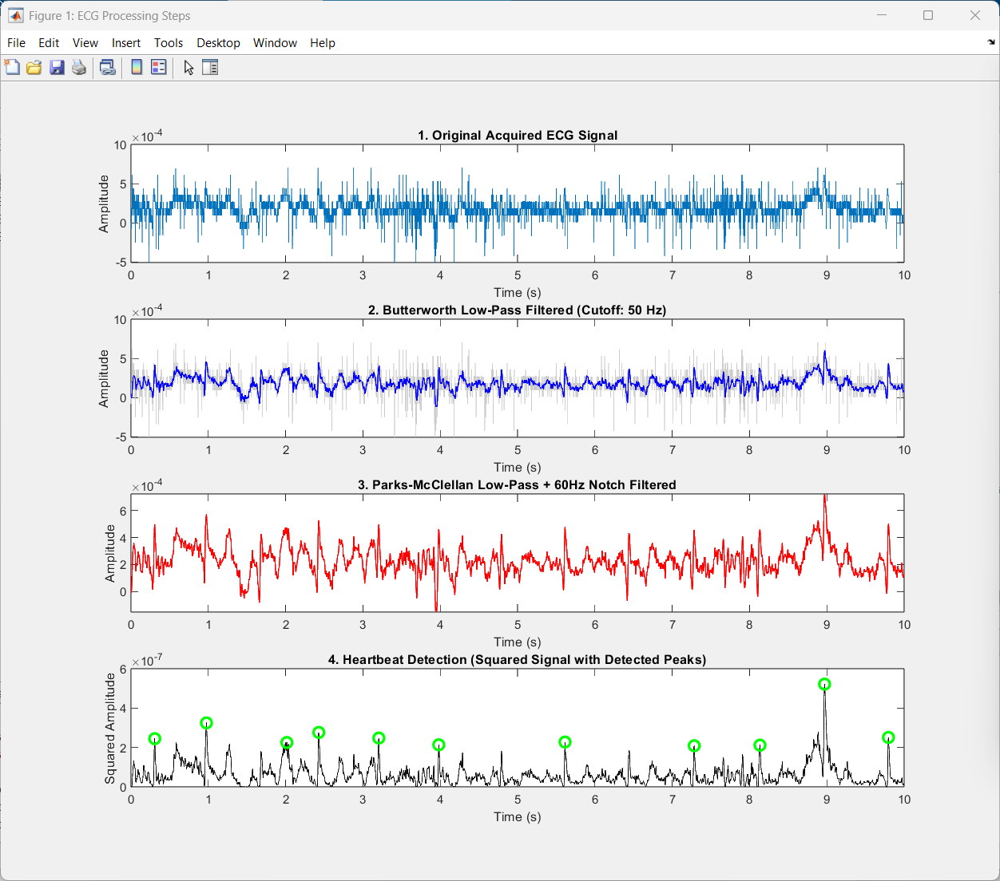
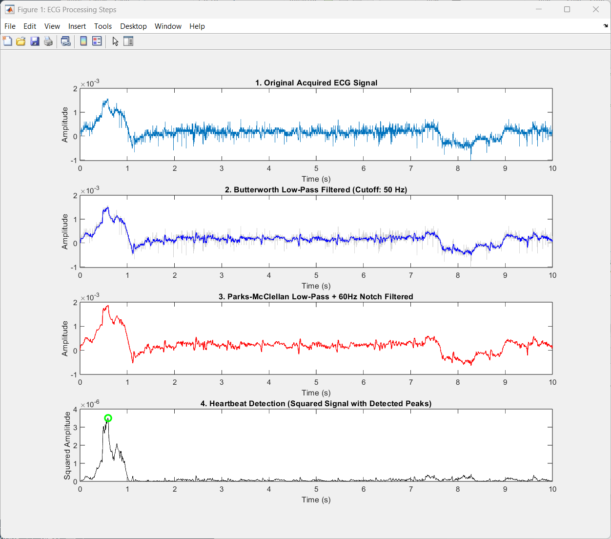

Overview项目概述
Designed a multi-stage digital signal processing pipeline in MATLAB to clean noisy ECG recordings and detect heartbeats. The chain applies a Butterworth low-pass filter, a Parks-McClellan FIR low-pass with a 60 Hz notch, and a squaring-based peak detector to isolate QRS complexes from data captured under different physiological conditions.在 MATLAB 中设计了一条多级数字信号处理流水线，用于净化含噪的 ECG 记录并检测心搏。该处理链依次应用巴特沃斯低通滤波器、带 60 Hz 陷波的 Parks-McClellan FIR 低通滤波器，以及基于平方的峰值检测器，从不同生理状态下采集的数据中分离出 QRS 波群。
Gallery图库
Click any image to enlarge.点击任意图片可放大。

Four-stage ECG processing pipeline: raw signal, Butterworth low-pass, Parks-McClellan plus 60 Hz notch, and squared-signal heartbeat detection with marked peaks.四级 ECG 处理流水线：原始信号、巴特沃斯低通、Parks-McClellan 加 60 Hz 陷波，以及标出峰值的平方信号心搏检测。

The same filtering and detection pipeline applied to a resting-condition ECG recording.将同一套滤波与检测流水线应用于静息状态下的 ECG 记录。